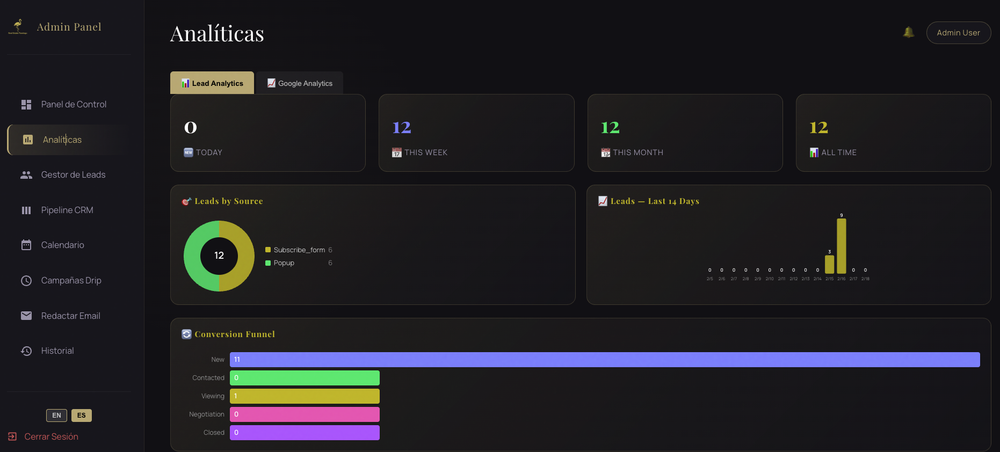
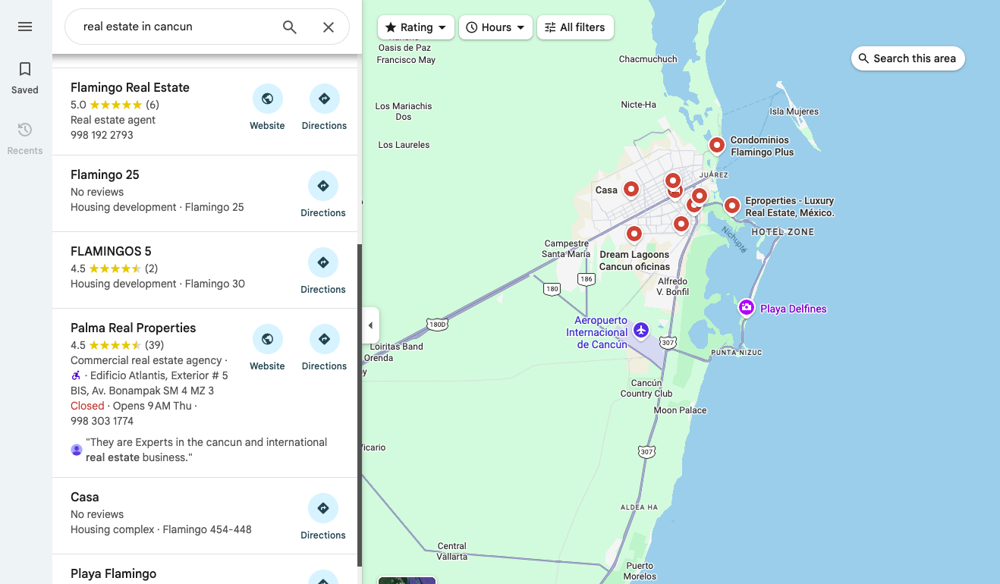
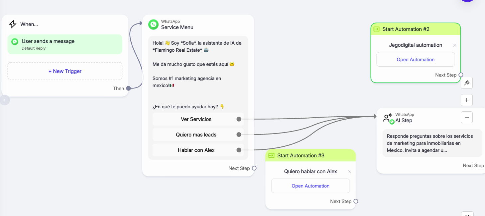

ChatGPT y Marketing Inmobiliario en México: La Guía Definitiva 2026
Cómo usar inteligencia artificial para multiplicar tu marketing por 10 — y cómo hacer que ChatGPT, Gemini y Perplexity recomienden TU agencia.
ChatGPT, Gemini y Perplexity están transformando el marketing inmobiliario en México de dos formas simultáneas: como herramientas para crear contenido, descripciones de propiedades, y campañas de email 10 veces más rápido — y como nuevos canales de búsqueda donde el 34% de los compradores ya buscan propiedades. La inmobiliaria que entiende ambos lados de esta revolución tiene una ventaja competitiva que sus rivales tardarán años en alcanzar. En esta guía cubrimos los dos: cómo usar IA para tu marketing Y cómo hacer que la IA te recomiende.
1. La Doble Revolución: IA como Herramienta Y como Canal de Ventas
La mayoría de los artículos sobre ChatGPT e inmobiliarias cubren solo una cara de la moneda: usar ChatGPT como herramienta para crear contenido. Eso está bien, pero es solo el 50% de la oportunidad.
La revolución real tiene dos dimensiones que toda inmobiliaria en México necesita entender en 2026:
Dimensión 1: IA como herramienta de productividad
Un agente inmobiliario promedio dedica 6 horas semanales a crear contenido para redes sociales, escribir descripciones de propiedades y redactar emails de seguimiento. Con ChatGPT, esas mismas tareas toman 45 minutos. Eso libera 5 horas por semana — 260 horas al año — para lo que realmente genera comisiones: mostrar propiedades y cerrar tratos.
Dimensión 2: IA como nuevo canal de búsqueda (AEO)
Haz esta prueba ahora: abre ChatGPT y escribe "¿cuál es la mejor inmobiliaria en Cancún?". Si tu agencia no aparece, tienes un problema que crece cada mes. Los buscadores con IA (ChatGPT, Gemini, Perplexity, Google AI Overviews) no muestran 10 resultados azules — muestran una sola respuesta y citan a las fuentes que consideran más autorizadas.
La estrategia para aparecer en esas respuestas se llama AEO (Answer Engine Optimization), y es el equivalente al SEO pero para la era de búsqueda con inteligencia artificial. Ningún competidor en el SERP actual de "chatgpt marketing inmobiliario" cubre este ángulo.
Dashboard real de resultados SEO y AEO para una inmobiliaria en Cancún — visibilidad orgánica medida con herramientas profesionales.
2. ChatGPT para Marketing Inmobiliario: 7 Usos Prácticos con Prompts
Estos son los 7 usos más efectivos de ChatGPT para inmobiliarias en México, con prompts que puedes copiar y usar hoy mismo. Cada uno incluye el prompt exacto y el resultado esperado.
Uso 1: Descripciones de propiedades que venden
Una buena descripción de propiedad convierte visitantes en llamadas. ChatGPT genera descripciones profesionales en 30 segundos que normalmente tomarían 30-45 minutos escribir.
Actúa como copywriter inmobiliario experto en el mercado de [Cancún/CDMX/tu ciudad]. Escribe una descripción de venta para esta propiedad: [pegar detalles]. Incluye: gancho emocional en la primera línea, 3 beneficios del estilo de vida, datos duros (m², recámaras, amenidades), y un call-to-action para agendar visita. Tono: profesional y aspiracional. Máximo 200 palabras.
Uso 2: 12 posts mensuales para redes sociales en 20 minutos
La gestión de redes sociales consume 6+ horas semanales para la mayoría de agentes. Con un solo prompt, ChatGPT genera un calendario editorial completo de 12 publicaciones con copy, hashtags y horarios de publicación optimizados.
Crea un calendario de 12 publicaciones de Instagram para una inmobiliaria en [tu ciudad] para [mes]. Incluye: 4 posts educativos (tips para compradores), 3 posts de propiedades destacadas, 3 posts de testimonios/resultados, 2 posts de mercado/tendencias. Para cada uno: texto del post (máximo 150 palabras), 8 hashtags relevantes, horario sugerido, y tipo de visual recomendado. Todo en español.
Uso 3: Emails de seguimiento que convierten leads fríos
El 80% de las ventas inmobiliarias requieren 5 o más contactos con el prospecto. ChatGPT crea secuencias de email que nutren leads automáticamente durante semanas, manteniendo tu agencia en el top-of-mind sin que inviertas tiempo manual.
Crea una secuencia de 5 emails de seguimiento para un lead inmobiliario que visitó [tipo de propiedad] en [zona]. Espaciado: día 1, día 3, día 7, día 14, día 21. Cada email: asunto (máximo 6 palabras), cuerpo (máximo 100 palabras), un dato de valor sobre la zona, y call-to-action. Tono: personal, no corporativo. Incluye una razón de urgencia gradual.
Centro de automatización real — la IA gestiona seguimiento de leads, emails y campañas sin intervención manual.
Uso 4: Artículos de blog optimizados para SEO local
Cada artículo de blog bien optimizado es un imán de tráfico que trabaja las 24 horas. Para inmobiliarias, los artículos de zona ("vivir en Cancún", "invertir en Playa del Carmen") generan leads de alta intención durante meses. ChatGPT te ayuda a investigar y crear estos artículos en una fracción del tiempo normal.
Escribe un artículo de blog de 1,500 palabras titulado "Guía Completa para Invertir en [zona] en 2026". Estructura: H1 con keyword, párrafo introductorio que responda la pregunta principal directamente, 5 secciones H2 (mercado actual, mejores zonas, precios, proceso legal, ROI esperado), FAQ con 4 preguntas, y conclusión con CTA. Incluye datos específicos de la zona. SEO: keyword "invertir en [zona]" en H1, primer párrafo, 2 H2s y conclusión.
Uso 5: Análisis de competencia en 5 minutos
Antes de crear cualquier estrategia, necesitas saber qué hace tu competencia. ChatGPT analiza su presencia digital y encuentra los huecos que puedes explotar.
Analiza la presencia digital de estas 3 inmobiliarias en [tu ciudad]: [competidor 1], [competidor 2], [competidor 3]. Para cada una evalúa: calidad de su sitio web (velocidad, diseño, SEO), presencia en Google Maps (reseñas, fotos, completitud), redes sociales (frecuencia, engagement, contenido), y contenido de blog (cantidad, temas, calidad). Luego identifica 5 oportunidades donde puedo superarlos.
Uso 6: Respuestas de WhatsApp instantáneas
La velocidad de respuesta es el factor #1 para convertir leads inmobiliarios. Un prospecto contactado en menos de 5 minutos tiene 21 veces más probabilidad de cierre que uno contactado en 30 minutos. ChatGPT puede generar plantillas de respuesta instantánea que suenan personales, no robóticas.
Uso 7: Reportes de mercado para posicionarte como experto
Los agentes inmobiliarios que publican reportes de mercado semanales o mensuales construyen autoridad. ChatGPT te ayuda a analizar datos de mercado y convertirlos en reportes visuales que puedes compartir en LinkedIn, Instagram y con clientes potenciales.
Estos 7 usos combinados ahorran un promedio de 20 horas semanales por agente. En un equipo de 5 personas, eso equivale a contratar un empleado adicional — sin el costo de nómina.
3. Gemini, Perplexity y Google AI: Los Otros Buscadores que Importan
El 90% de los artículos sobre IA para inmobiliarias solo mencionan ChatGPT. Eso es un error grave. En 2026, hay al menos 4 buscadores con IA que tus prospectos usan para buscar propiedades e inmobiliarias:
| Buscador IA | Usuarios (2026) | Cómo buscan prospectos | Tu oportunidad |
|---|---|---|---|
| ChatGPT | 300M+ usuarios activos/semana | "¿Mejores inmobiliarias en Cancún?" | Ser citado como respuesta directa |
| Google Gemini | Integrado en búsqueda de Google | "Comprar casa en Playa del Carmen" | Aparecer en AI Overviews de Google |
| Perplexity | 100M+ consultas/mes | "¿Dónde invertir en bienes raíces en México?" | Ser citado como fuente con link directo |
| Google AI Overviews | Aparece en 25%+ de búsquedas | "Proceso para comprar casa en México" | Tu contenido resumido arriba del resultado #1 |
La clave es que cada buscador con IA decide qué fuentes citar basándose en criterios similares pero no idénticos. ChatGPT prioriza contenido estructurado y actualizado. Perplexity prioriza fuentes con datos verificables y cita la URL directamente. Google AI Overviews favorece contenido que ya rankea en Google orgánico. Gemini integra datos de Google Business Profile y Google Maps.
Esto significa que necesitas una estrategia multi-plataforma que cubra todas las bases — no solo optimizar para ChatGPT.

Dashboard de analytics real — el tráfico orgánico crece cuando combinas SEO tradicional con optimización para buscadores con IA.
4. AEO: Cómo Hacer que ChatGPT Recomiende TU Inmobiliaria
AEO (Answer Engine Optimization) es la disciplina de optimizar tu presencia digital para que los buscadores con inteligencia artificial citen tu marca como respuesta. Es el equivalente al SEO de los años 2010, pero para la era de búsqueda con IA. Y como el SEO en sus primeros años, quien se posiciona primero tiene ventaja de primer movimiento.
Estos son los 5 pilares del AEO para inmobiliarias:
Pilar 1: Contenido en formato pregunta-respuesta
Los buscadores con IA buscan respuestas directas. Si tu contenido empieza con "En el competitivo mundo del marketing inmobiliario..." en vez de responder la pregunta en la primera línea, serás ignorado. Cada página de tu sitio debe empezar con una respuesta clara y concisa de 2-3 líneas antes de profundizar.
Pilar 2: Alta densidad de datos verificables
Los modelos de IA priorizan fuentes con datos específicos sobre fuentes genéricas. "Las casas en Cancún son una buena inversión" no será citado. "El precio promedio por m² en la Zona Hotelera de Cancún en Q1 2026 es de $42,000 MXN, con una apreciación anual del 12.3% según datos del mercado local" SÍ será citado.
Pilar 3: Schema markup avanzado
El schema markup (código JSON-LD) ayuda a los buscadores con IA a entender la estructura de tu contenido. Para inmobiliarias, los tipos de schema más importantes son: RealEstateListing para propiedades, LocalBusiness para tu agencia, FAQPage para preguntas frecuentes, y Article para blog posts.
Pilar 4: Autoridad de dominio en tu zona
Los buscadores con IA citan fuentes que consideran autorizadas. Para una inmobiliaria, la autoridad se construye con: backlinks de medios locales, reseñas en Google Maps (mínimo 50 reseñas con 4.5+ estrellas), contenido consistente sobre tu zona geográfica, y menciones en otros sitios del sector.
Pilar 5: Actualización constante
Los modelos de IA priorizan contenido reciente. Un artículo de 2023 sobre "inversiones inmobiliarias en México" será descartado a favor de uno publicado en 2026. Actualiza tu contenido clave cada 3 meses con datos frescos, y los buscadores con IA te mantendrán como fuente citada.
De las 8 páginas que rankean en Google para "chatgpt marketing inmobiliario", ninguna cubre AEO. Ninguna explica cómo aparecer EN las respuestas de IA. Esto significa que hay una ventana de oportunidad masiva para las inmobiliarias que actúen ahora.
5. Caso de Éxito: Cómo Flamingo Real Estate Logró 4.4x de Visibilidad
Flamingo Real Estate es una inmobiliaria en Cancún que implementó una estrategia integral de IA + SEO + AEO. Estos son los resultados reales, medidos con herramientas profesionales, no estimaciones:

Resultado real: Flamingo Real Estate en posición #1 de Google Maps para búsquedas inmobiliarias en Cancún.
Qué implementamos para Flamingo:
- SEO técnico completo: Optimización de velocidad (98+ PageSpeed), schema markup para propiedades, estructura de URLs optimizada, y corrección de 47 errores técnicos detectados en la auditoría inicial.
- 4 artículos de blog mensuales optimizados para SEO local y AEO, cada uno con investigación de keywords, análisis competitivo, y formato answer-first.
- Google Business Profile optimizado: Fotos profesionales, Google Posts semanales, gestión de reseñas, y categorías correctas.
- IA para captura de leads: Chatbot inteligente en WhatsApp que responde en menos de 5 segundos, califica prospectos automáticamente, y agenda visitas sin intervención humana.
- Estrategia AEO: Contenido optimizado para que ChatGPT y Perplexity citen a Flamingo cuando alguien pregunte por inmobiliarias en Cancún.
Otros resultados reales de nuestra cartera:
| Cliente | Resultado principal | Tiempo |
|---|---|---|
| GoodLife Tulum | +300% tráfico orgánico | 5 meses |
| Goza Real Estate | 3x volumen de leads + 98 PageSpeed | 4 meses |
| Solik Real Estate | 95% qualify rate + #1 Maps | 3 meses |
Sección de blog de Flamingo Real Estate — cada artículo sigue el pipeline de 5 pasos: investigación API, brief, escritura, optimización y publicación.
6. Paso a Paso: Implementa IA en tu Inmobiliaria
No necesitas un presupuesto de $100,000 MXN para empezar con IA. Esta es la ruta que recomendamos basados en los resultados de nuestros clientes, ordenada de menor a mayor inversión:
Fase 1: Productividad inmediata (Semana 1-2)
- Activa ChatGPT Plus ($400 MXN/mes) — acceso a GPT-4o, el modelo más capaz para contenido inmobiliario.
- Crea tus prompts base: descripciones de propiedades, posts de redes, emails de seguimiento (usa los prompts de esta guía como base).
- Guarda tus prompts en un documento accesible para todo el equipo — la consistencia es clave.
Fase 2: Presencia digital optimizada (Mes 1-2)
- Optimiza tu Google Business Profile: Fotos profesionales, horarios correctos, categorías afinadas, y responde a TODAS las reseñas.
- Publica 2 artículos de blog al mes optimizados con los prompts de SEO local.
- Configura automatización de WhatsApp para responder leads en menos de 5 minutos.
Fase 3: Dominio completo (Mes 3-6)
- SEO técnico profesional: Velocidad del sitio, schema markup, estructura de URLs, link building local.
- Estrategia AEO: Contenido answer-first, alta densidad de datos, FAQ con schema.
- 4 artículos de blog mensuales con investigación de keywords real y análisis competitivo.
- Automatización de leads completa: IA para WhatsApp, email nurturing, CRM con pipeline de ventas.
Sistema de captura de leads con IA que opera 24/7 — responde, califica y agenda citas automáticamente por WhatsApp.
Por cada $1 MXN invertido en IA + SEO, nuestros clientes recuperan entre $5 y $8 MXN en los primeros 6 meses. La inversión se paga sola con los primeros 2-3 leads que cierran gracias a mayor visibilidad.
7. Los Errores que el 90% de las Inmobiliarias Cometen con IA
Después de trabajar con decenas de inmobiliarias en México, estos son los errores más costosos que vemos repetirse:
Escribir "hazme un post de Instagram" produce contenido genérico que suena a robot. Los prompts deben incluir: tu ciudad, tipo de propiedad, audiencia objetivo, tono de marca, y datos específicos. La diferencia entre un prompt de 10 palabras y uno de 50 palabras es la diferencia entre contenido mediocre y contenido que convierte.
El 90% de las inmobiliarias solo piensa en Google. Pero Perplexity cita fuentes con link directo (tráfico gratuito), Gemini integra datos de Google Maps (tu perfil de negocio), y Google AI Overviews muestra tu contenido ARRIBA del resultado #1. Si solo optimizas para Google clásico, dejas dinero en la mesa.
ChatGPT a veces inventa datos, usa frases repetitivas, o produce contenido que suena artificial. Todo contenido generado con IA debe pasar por una revisión humana antes de publicar. Agrega datos reales de tu mercado, personaliza con ejemplos locales, y verifica que cada estadística sea correcta.
Si no mides, no mejoras. Necesitas trackear: posiciones en Google (semanal), tráfico orgánico (mensual), leads generados por canal, tasa de conversión de lead a visita, y visibilidad en buscadores con IA. Sin métricas, no sabes si tu inversión en IA está funcionando.
El SEO y AEO no son publicidad pagada. Los resultados serios toman 3-6 meses. Google Maps puede mejorar en 4-8 semanas con optimización agresiva, pero el posicionamiento orgánico para keywords competitivas tarda 6-12 meses. Las inmobiliarias que abandonan en el mes 2 nunca ven los resultados exponenciales del mes 5+.

Automatización de WhatsApp real — la IA maneja el primer contacto, calificación y seguimiento de leads inmobiliarios 24/7.
8. Preguntas Frecuentes sobre IA en el Sector Inmobiliario
¿Cuál es la mejor IA para agentes inmobiliarios?
La mejor combinación incluye: ChatGPT (GPT-4o) para crear descripciones, posts y emails en segundos; Perplexity para investigar mercado y precios comparativos por zona; Google Gemini para optimizar tu Google Business Profile y Maps. Para automatización de leads, un sistema de IA integrado con WhatsApp que responda en menos de 5 minutos genera 21x más probabilidad de cierre que el seguimiento manual.
¿Cómo hacer marketing con ChatGPT para inmobiliarias?
Usa ChatGPT con prompts específicos para tu mercado: 1) Crea descripciones de propiedades con contexto local. 2) Genera 12 posts mensuales de redes sociales con un solo prompt. 3) Escribe artículos de blog optimizados para SEO local. 4) Crea secuencias de email para seguimiento de leads. 5) Analiza a tu competencia. El truco está en crear prompts específicos para el mercado mexicano — los prompts genéricos producen contenido genérico.
¿Cómo pueden los agentes inmobiliarios usar ChatGPT?
Los usos más efectivos: crear descripciones de propiedades (ahorra 45 minutos por listado), generar contenido para redes sociales (12 posts en 20 minutos vs 6 horas), escribir emails de seguimiento personalizados, y analizar tendencias de mercado por zona. El uso más avanzado: optimizar tu sitio para que ChatGPT, Gemini y Perplexity recomienden TU agencia cuando alguien pregunte "¿cuál es la mejor inmobiliaria en [tu ciudad]?"
¿Qué es AEO y por qué importa para inmobiliarias?
AEO (Answer Engine Optimization) es la estrategia para aparecer en las respuestas de buscadores con IA. El 34% de búsquedas inmobiliarias ya pasan por ChatGPT, Gemini, Perplexity o Google AI Overviews. A diferencia del SEO que posiciona en resultados de Google, el AEO optimiza tu contenido para ser citado directamente como respuesta. Requiere: contenido answer-first, datos verificables, schema markup, y autoridad en tu zona.
¿Cuánto cuesta implementar IA en una inmobiliaria?
Nivel básico (ChatGPT Plus para contenido): $400 MXN/mes. Nivel intermedio (IA + SEO + automatización de leads): $4,900-$10,900 MXN/mes con una agencia especializada. Nivel avanzado (sistema completo con AEO + CRM + WhatsApp AI + videos): $16,900+ MXN/mes. El ROI típico: por cada $1 invertido en IA y SEO, las inmobiliarias recuperan $5-$8 en los primeros 6 meses.
¿ChatGPT puede reemplazar a una agencia de marketing inmobiliario?
No completamente. ChatGPT es excelente para crear contenido, responder preguntas y generar ideas. Pero no puede: implementar SEO técnico, configurar automatizaciones de WhatsApp, optimizar Google Business Profile, crear estrategia AEO completa, medir ROI, o construir un sitio web de alto rendimiento. La combinación ganadora es una agencia que usa IA como herramienta interna — así entregas resultados de equipo de 10 personas con un equipo compacto.
¿Quieres que la IA trabaje para tu inmobiliaria?
Te mostramos exactamente cómo implementar ChatGPT, SEO y AEO en tu agencia — con un plan personalizado basado en tu zona y competencia. Pilot 14 días con garantía de devolución 100% — probado por Flamingo Real Estate (+320% tráfico orgánico, #1 Google Maps).
Agendar Plan de CrecimientoO escríbenos por WhatsApp: +52 998 202 3263